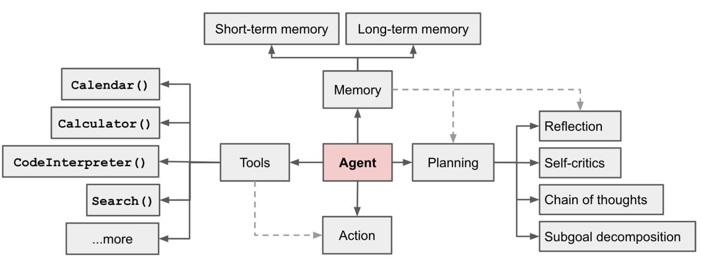
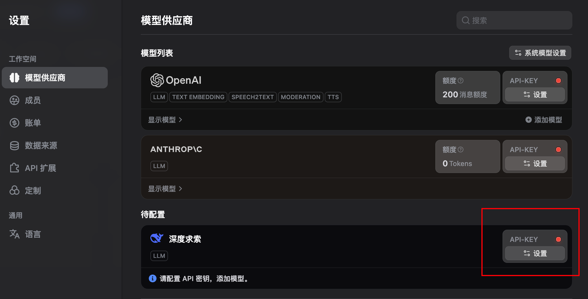
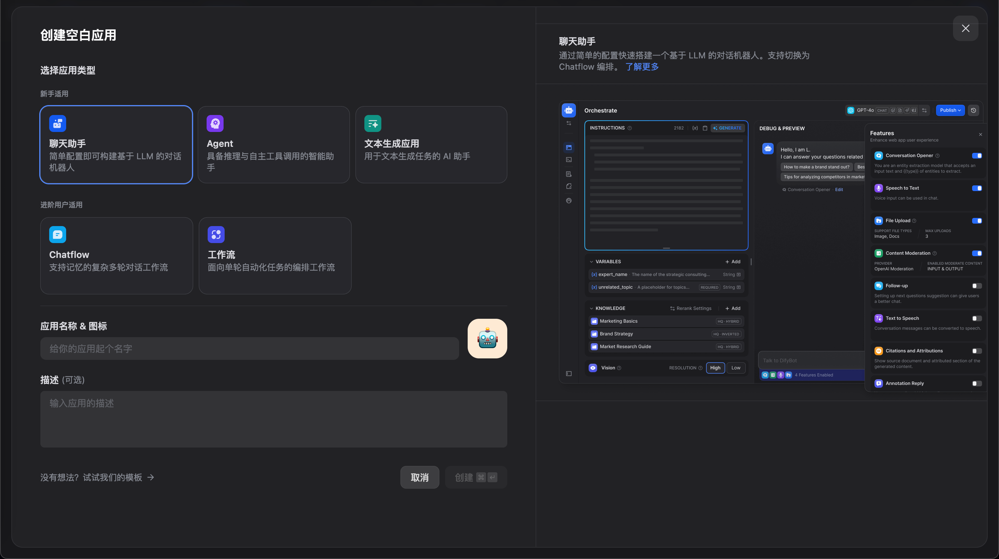
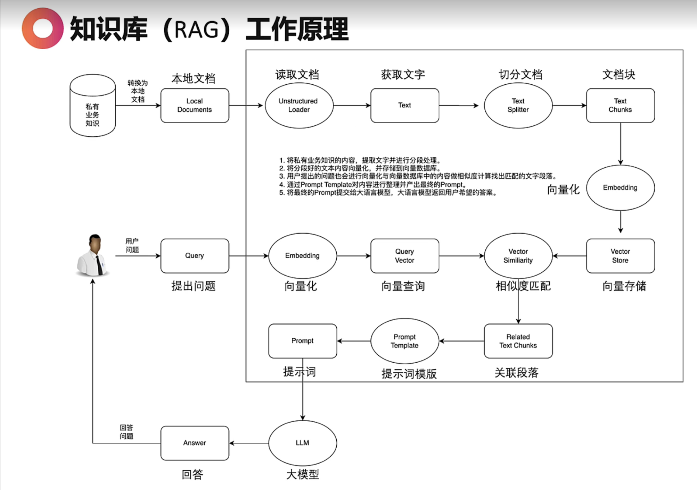

比尔盖茨：AI 智能体即将彻底改变我们使用计算机的方式。
什么是 Agent
具有复杂推理能力、记忆和执行任务手段的自主代理；
Agent = 规划 + 记忆 + 工具 + 行动

聪明的大脑 + 经验记忆 让智能体做出更正确的决策！
主流的 AI Agent 框架
B 端：AutoGen、FastGPT、Dify（B 端用户无脑 Dify）
C 端：GPTs、智谱清言、Coze（1000 人以下无脑选 Coze）
AI智能体赋能各行业解析
办公人员：整理会议纪要、活动策划方法、合同编写、合同审核、可研报告
自媒体：AI 短视频文案脚本、AI 写公众号、AI 写小红书、AI 私域客服、AI 生成视频、AI 自动配音、AI 视频混剪
客服：
HR：
程序员：自动代码补全、Devin 能使用各种工具如shell、代码编辑器等组合应用来解决软件开发中遇到的各种难题
平面设计：
投资分析：
电商老板：AI 公众号助理+客服助理+产品设计助理
AI + 医疗：根据患者的症状自动判断属于什么科室，自动进行挂号
教育行业：AI 根据重难点自动出题、AI 辅助教案编写、AI 写论文、AI 批改作业、AI 教育自媒体（各科目）
基于 Dify 的 AI 智能体的开发以及 AI 工作流的开发
Dify 一键私有化部署
https://dify.ai/zh
- 使用 Sass 平台：比如 sealos
- Liunx + Docker compose
Dify 接入 DeepSeek 模型
右上角头像 - 设置 - 模型供应商
安装 深度求索

Dify 基础操作
工作室

课程助理搭建
知识库 RAG 工作原理

用户发出去的问题不是给到大语言模型最终的提示词。
知识库检索方式
分段设置——切分文档
索引方式——什么向量模型进行向量化
检索设置——用户提出问题按照什么方式在数据库中查询，并通过提示词模板组装
知识库配置详解
分段设置：
- 分段标识符、分段最大长度（默认 500）、分段重叠长度
智能体配置详解
引用知识库 - 召回设置（Top K 取前几个段） - Score 阈值